ART · DESIGN · VISUAL CULTURE
111 种艺术与设计风格
浏览 111 种艺术、设计与视觉文化风格。每种风格都有独立页面，包含历史、识别特征、配色、构图、材质和 AI 绘图 Prompt。
 古埃及艺术Ancient Egyptian Art以永恒秩序、神圣权力与来世信仰为核心，用严格规范组织人物和叙事。
古埃及艺术Ancient Egyptian Art以永恒秩序、神圣权力与来世信仰为核心，用严格规范组织人物和叙事。
 古希腊古典艺术Classical Greek Art以比例、均衡和理想人体探索理性秩序，将自然观察提炼为可复用的美学典范。
古希腊古典艺术Classical Greek Art以比例、均衡和理想人体探索理性秩序，将自然观察提炼为可复用的美学典范。
 拜占庭艺术Byzantine Art通过正面圣像、金色非现实空间和马赛克光泽，传达超越尘世的宗教权威。
拜占庭艺术Byzantine Art通过正面圣像、金色非现实空间和马赛克光泽，传达超越尘世的宗教权威。
 哥特艺术Gothic Art以垂直性、尖拱结构和有色光线塑造通向神圣世界的空间体验。
哥特艺术Gothic Art以垂直性、尖拱结构和有色光线塑造通向神圣世界的空间体验。
 文艺复兴Renaissance以透视、人体和古典秩序重新建立可测量的现实空间。
文艺复兴Renaissance以透视、人体和古典秩序重新建立可测量的现实空间。
 矫饰主义Mannerism有意拉伸古典规范，以复杂姿态、反自然色彩和不稳定空间追求优雅张力。
矫饰主义Mannerism有意拉伸古典规范，以复杂姿态、反自然色彩和不稳定空间追求优雅张力。
 巴洛克Baroque用戏剧光线、运动和宏大尺度制造情感冲击。
巴洛克Baroque用戏剧光线、运动和宏大尺度制造情感冲击。
 洛可可Rococo以轻盈曲线、粉彩和亲密享乐场景取代巴洛克的宏大权威。
洛可可Rococo以轻盈曲线、粉彩和亲密享乐场景取代巴洛克的宏大权威。
 新古典主义Neoclassicism以考古发现和启蒙理性重新激活古典秩序，强调公共美德、清晰轮廓与克制情感。
新古典主义Neoclassicism以考古发现和启蒙理性重新激活古典秩序，强调公共美德、清晰轮廓与克制情感。
 浪漫主义Romanticism以崇高自然、个体情感和历史想象回应工业化与理性秩序。
浪漫主义Romanticism以崇高自然、个体情感和历史想象回应工业化与理性秩序。
 现实主义Realism拒绝神话理想化，将劳动者、城市生活和日常现场置于严肃艺术中心。
现实主义Realism拒绝神话理想化，将劳动者、城市生活和日常现场置于严肃艺术中心。
 前拉斐尔派Pre-Raphaelite Brotherhood以宝石般色彩、植物学细节和中世纪文学主题反对学院化的柔滑惯例。
前拉斐尔派Pre-Raphaelite Brotherhood以宝石般色彩、植物学细节和中世纪文学主题反对学院化的柔滑惯例。
 印象主义Impressionism以可见笔触和瞬时色光捕捉现代生活中的感知经验。
印象主义Impressionism以可见笔触和瞬时色光捕捉现代生活中的感知经验。
 后印象主义Post-Impressionism从印象主义的光色出发，转向更主观的情绪、结构、象征和个人笔触。
后印象主义Post-Impressionism从印象主义的光色出发，转向更主观的情绪、结构、象征和个人笔触。
 象征主义Symbolism用梦境、神话和私人符号替代直接再现，强调不可见的心理与精神世界。
象征主义Symbolism用梦境、神话和私人符号替代直接再现，强调不可见的心理与精神世界。
 工艺美术运动Arts and Crafts Movement以诚实材料、手工劳动和整体设计回应工业化批量生产的审美贫乏。
工艺美术运动Arts and Crafts Movement以诚实材料、手工劳动和整体设计回应工业化批量生产的审美贫乏。
 新艺术运动Art Nouveau以植物曲线和整体设计回应工业时代的机械化生产。
新艺术运动Art Nouveau以植物曲线和整体设计回应工业时代的机械化生产。
 野兽派Fauvism把色彩从再现对象中解放出来，以纯色冲突和直接笔触表达视觉能量。
野兽派Fauvism把色彩从再现对象中解放出来，以纯色冲突和直接笔触表达视觉能量。
 表现主义Expressionism以变形、尖锐色彩和直接笔触把内在焦虑置于客观再现之上。
表现主义Expressionism以变形、尖锐色彩和直接笔触把内在焦虑置于客观再现之上。
 立体主义Cubism把对象拆解为多个同时视点的几何切面，重构二维画面的空间逻辑。
立体主义Cubism把对象拆解为多个同时视点的几何切面，重构二维画面的空间逻辑。
 未来主义Futurism歌颂速度、机械和都市能量，用重复轮廓与力线表现连续运动。
未来主义Futurism歌颂速度、机械和都市能量，用重复轮廓与力线表现连续运动。
 达达主义Dada以荒诞、偶然和挪用反对战争与艺术权威，把日常材料变成观念挑衅。
达达主义Dada以荒诞、偶然和挪用反对战争与艺术权威，把日常材料变成观念挑衅。
 构成主义Constructivism以几何、工业语言和宣传性构图把艺术投入社会行动。
构成主义Constructivism以几何、工业语言和宣传性构图把艺术投入社会行动。
 至上主义Suprematism以纯粹几何形和无限白场摆脱对象再现，追求非客观感觉的最高状态。
至上主义Suprematism以纯粹几何形和无限白场摆脱对象再现，追求非客观感觉的最高状态。
 风格派De Stijl用水平垂直、矩形和原色建立跨绘画、建筑与家具的普遍视觉秩序。
风格派De Stijl用水平垂直、矩形和原色建立跨绘画、建筑与家具的普遍视觉秩序。
 包豪斯Bauhaus以基础形、材料实验与功能原则统一艺术、工艺和工业。
包豪斯Bauhaus以基础形、材料实验与功能原则统一艺术、工艺和工业。
 超现实主义Surrealism把梦境、潜意识和偶然性带入看似真实却逻辑失常的世界。
超现实主义Surrealism把梦境、潜意识和偶然性带入看似真实却逻辑失常的世界。
 装饰艺术Art Deco以流线几何、奢华材料和机器时代意象塑造现代都市的精致乐观。
装饰艺术Art Deco以流线几何、奢华材料和机器时代意象塑造现代都市的精致乐观。
 抽象表现主义Abstract Expressionism把画布变成身体行动和心理痕迹的场域，以巨大尺度强调创作过程本身。
抽象表现主义Abstract Expressionism把画布变成身体行动和心理痕迹的场域，以巨大尺度强调创作过程本身。
 色域绘画Color Field Painting以大尺度连续色面和边缘关系营造沉浸体验，弱化手势和具体形象。
色域绘画Color Field Painting以大尺度连续色面和边缘关系营造沉浸体验，弱化手势和具体形象。
 波普艺术Pop Art把广告、漫画与消费品图像带入艺术，放大大众传播的魅力和矛盾。
波普艺术Pop Art把广告、漫画与消费品图像带入艺术，放大大众传播的魅力和矛盾。
 欧普艺术Op Art通过精确重复和高反差制造视觉震动、深度错觉与运动感。
欧普艺术Op Art通过精确重复和高反差制造视觉震动、深度错觉与运动感。
 极简主义Minimalism以基本形、工业材料和重复单元去除个人叙事，让对象、尺度与空间直接发生关系。
极简主义Minimalism以基本形、工业材料和重复单元去除个人叙事，让对象、尺度与空间直接发生关系。
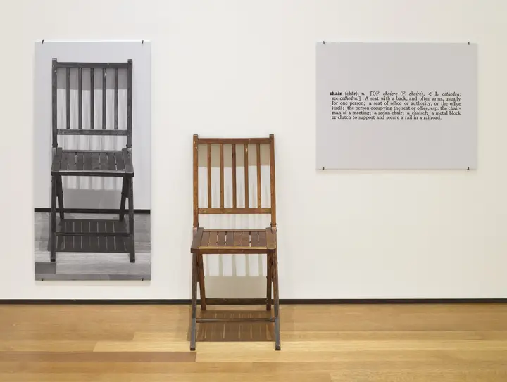
观念艺术Conceptual Art把作品的核心从物质形式转向观念、指令、语言和制度语境。 新表现主义Neo-Expressionism以粗暴人物、涂写符号和厚重颜料恢复绘画的身体性、历史感与都市焦虑。
新表现主义Neo-Expressionism以粗暴人物、涂写符号和厚重颜料恢复绘画的身体性、历史感与都市焦虑。
 照相写实主义Photorealism以摄影为中介，通过精确绘制重新审视机械观看、图像复制与现实感。
照相写实主义Photorealism以摄影为中介，通过精确绘制重新审视机械观看、图像复制与现实感。
 后现代主义Postmodernism质疑现代主义的唯一正确答案，以历史引用、戏仿、符号和混杂规则重获表达自由。
后现代主义Postmodernism质疑现代主义的唯一正确答案，以历史引用、戏仿、符号和混杂规则重获表达自由。
 低眉艺术 / 波普超现实主义Lowbrow Art / Pop Surrealism融合地下漫画、热棒文化、朋克和超现实意象，以精细卡通反抗高低艺术边界。
低眉艺术 / 波普超现实主义Lowbrow Art / Pop Surrealism融合地下漫画、热棒文化、朋克和超现实意象，以精细卡通反抗高低艺术边界。
 迷幻艺术Psychedelic Art以感知扩张、反文化音乐和东方图像为背景，制造高密度、流动且难以稳定阅读的视觉。
迷幻艺术Psychedelic Art以感知扩张、反文化音乐和东方图像为背景，制造高密度、流动且难以稳定阅读的视觉。
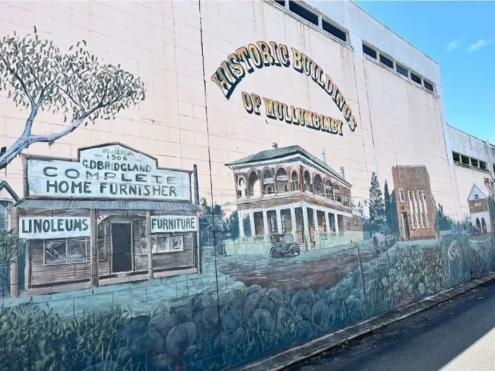
街头艺术Street Art以公共空间为媒介，融合署名、模板、壁画和社会评论，形成快速传播的城市视觉语言。 文人水墨Literati Ink Painting以笔墨、气韵与留白表达主观精神，而非复制可见世界。
文人水墨Literati Ink Painting以笔墨、气韵与留白表达主观精神，而非复制可见世界。
 工笔画Gongbi Painting以精谨线描、层层设色和细密观察塑造清晰而典雅的形象。
工笔画Gongbi Painting以精谨线描、层层设色和细密观察塑造清晰而典雅的形象。
 敦煌艺术Dunhuang Art融合丝路多元文化，以壁画、飞天、藻井和佛教叙事构成宏阔视觉体系。
敦煌艺术Dunhuang Art融合丝路多元文化，以壁画、飞天、藻井和佛教叙事构成宏阔视觉体系。
 中国木版年画Chinese Woodblock New Year Print以套色木版、吉祥符号和民间叙事服务节庆生活与家庭空间。
国潮视觉Guochao Visual Style把中国传统图形、文字和色彩重新组织为当代品牌与青年消费视觉。
中国木版年画Chinese Woodblock New Year Print以套色木版、吉祥符号和民间叙事服务节庆生活与家庭空间。
国潮视觉Guochao Visual Style把中国传统图形、文字和色彩重新组织为当代品牌与青年消费视觉。
 浮世绘Ukiyo-e以木版套色记录城市生活、风景与转瞬即逝的世俗世界。
浮世绘Ukiyo-e以木版套色记录城市生活、风景与转瞬即逝的世俗世界。
 琳派Rinpa School以金银地、自然母题和大胆留白形成高度装饰性的日本视觉传统。
琳派Rinpa School以金银地、自然母题和大胆留白形成高度装饰性的日本视觉传统。
 日本画Nihonga以传统矿物颜料和纸绢材料回应现代绘画制度，兼具细腻观察与平面秩序。
日本画Nihonga以传统矿物颜料和纸绢材料回应现代绘画制度，兼具细腻观察与平面秩序。
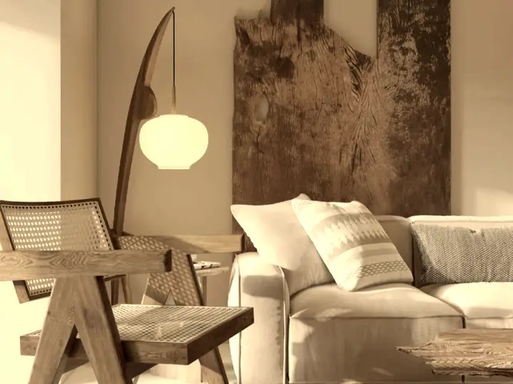
侘寂Wabi-sabi重视不完满、时间痕迹与朴素材料，在克制中呈现安静和短暂。 卡哇伊美学Kawaii Aesthetic以幼态比例、圆润轮廓和柔亮色彩建立亲和、轻松且高度商品化的视觉语言。
卡哇伊美学Kawaii Aesthetic以幼态比例、圆润轮廓和柔亮色彩建立亲和、轻松且高度商品化的视觉语言。
 超扁平Superflat消解高低艺术边界，将动画、消费文化与传统平面性压缩进无纵深图像。
超扁平Superflat消解高低艺术边界，将动画、消费文化与传统平面性压缩进无纵深图像。
 韩国民画Korean Minhwa以民间愿望、日常幽默和吉祥象征形成自由鲜明的朝鲜时代绘画语言。
韩国民画Korean Minhwa以民间愿望、日常幽默和吉祥象征形成自由鲜明的朝鲜时代绘画语言。
 波斯细密画Persian Miniature Painting以精密线条、层叠空间和诗歌叙事组织宫廷、园林与史诗世界。
波斯细密画Persian Miniature Painting以精密线条、层叠空间和诗歌叙事组织宫廷、园林与史诗世界。
 莫卧儿细密画Mughal Miniature融合波斯细密画、印度色彩与欧洲观察法，以精微笔触记录宫廷、自然和史诗。
莫卧儿细密画Mughal Miniature融合波斯细密画、印度色彩与欧洲观察法，以精微笔触记录宫廷、自然和史诗。
 米提拉绘画Madhubani Painting以双线轮廓、满版纹样和自然颜料记录神话、婚礼与地方生活。
米提拉绘画Madhubani Painting以双线轮廓、满版纹样和自然颜料记录神话、婚礼与地方生活。
 伊斯兰几何装饰Islamic Geometric Ornament通过重复、对称与比例构成可无限延展的秩序。
伊斯兰几何装饰Islamic Geometric Ornament通过重复、对称与比例构成可无限延展的秩序。
 藏传唐卡Tibetan Thangka Painting依据严格仪轨和比例绘制宗教图像，以中心神祇和象征系统服务修行与传承。
藏传唐卡Tibetan Thangka Painting依据严格仪轨和比例绘制宗教图像，以中心神祇和象征系统服务修行与传承。
 墨西哥壁画运动Mexican Muralism以公共壁画讲述革命、劳动、民族身份和社会历史，强调集体可见性。
墨西哥壁画运动Mexican Muralism以公共壁画讲述革命、劳动、民族身份和社会历史，强调集体可见性。
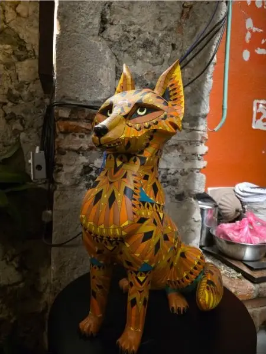
墨西哥民间艺术Mexican Folk Art以节庆、宗教、动物与日常生活为主题，形成鲜艳、手工且富于象征的民间视觉。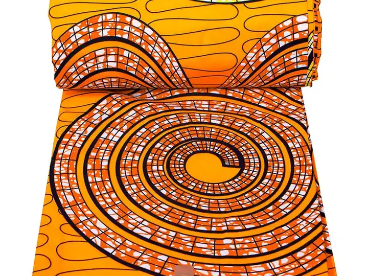
非洲蜡染印花视觉African Wax Print Aesthetic以高对比色、重复图案和织物尺度形成横跨服饰、身份与商业传播的视觉语言。 非洲未来主义Afrofuturism通过科技、神话与黑人历史重写未来想象，连接身份、解放和宇宙叙事。
非洲未来主义Afrofuturism通过科技、神话与黑人历史重写未来想象，连接身份、解放和宇宙叙事。
 瑞士国际主义International Typographic Style以网格、无衬线字体和客观信息层级建立现代视觉秩序。
瑞士国际主义International Typographic Style以网格、无衬线字体和客观信息层级建立现代视觉秩序。
 中世纪现代主义Mid-century Modern把现代主义功能原则转化为温暖、轻巧且适合大众生活的建筑、家具与平面语言。
中世纪现代主义Mid-century Modern把现代主义功能原则转化为温暖、轻巧且适合大众生活的建筑、家具与平面语言。
 斯堪的纳维亚现代主义Scandinavian Modern以人本功能、自然材料和简洁形式平衡现代生产与日常温度。
斯堪的纳维亚现代主义Scandinavian Modern以人本功能、自然材料和简洁形式平衡现代生产与日常温度。
 流线型现代主义Streamline Moderne以空气动力学曲线、水平速度线和工业材料表达机器时代的效率与乐观。
流线型现代主义Streamline Moderne以空气动力学曲线、水平速度线和工业材料表达机器时代的效率与乐观。
 原子时代设计Atomic Age Design把原子、太空和战后消费乐观转化为活泼图案、产品与广告语言。
原子时代设计Atomic Age Design把原子、太空和战后消费乐观转化为活泼图案、产品与广告语言。
 新浪潮字体设计New Wave Typography打破瑞士网格的中性秩序，用旋转、叠印和多重阅读路径制造视觉张力。
新浪潮字体设计New Wave Typography打破瑞士网格的中性秩序，用旋转、叠印和多重阅读路径制造视觉张力。
 孟菲斯设计Memphis Design用鲜艳图案、廉价材料和玩笑般造型反抗现代主义的克制。
孟菲斯设计Memphis Design用鲜艳图案、廉价材料和玩笑般造型反抗现代主义的克制。
 朋克视觉Punk Visual Style以低成本复制、剪贴和反权威文字构成直接、粗粝的 DIY 传播语言。
朋克视觉Punk Visual Style以低成本复制、剪贴和反权威文字构成直接、粗粝的 DIY 传播语言。
 垃圾摇滚设计Grunge Design以侵蚀字体、脏污纹理和非正式排版反抗数字设计的洁净与规则。
垃圾摇滚设计Grunge Design以侵蚀字体、脏污纹理和非正式排版反抗数字设计的洁净与规则。
 粗野主义Brutalism以裸露结构、清水混凝土和巨型体量表达公共机构与战后重建的直接性。
粗野主义Brutalism以裸露结构、清水混凝土和巨型体量表达公共机构与战后重建的直接性。
 数字新粗野主义Digital Neo-Brutalism用裸露结构、系统字体和故意直接的界面反对过度精致与同质化。
数字新粗野主义Digital Neo-Brutalism用裸露结构、系统字体和故意直接的界面反对过度精致与同质化。
 扁平化设计Flat Design去除拟物材质和装饰阴影，用清晰色块、图标与排版提升跨设备界面的效率。
扁平化设计Flat Design去除拟物材质和装饰阴影，用清晰色块、图标与排版提升跨设备界面的效率。
 企业孟菲斯插画Corporate Memphis以模块化扁平人物、柔和几何和包容性场景快速构建科技产品的亲和叙事。
Material DesignMaterial Design用纸张隐喻、层级阴影、响应式动效和系统组件统一多设备产品体验。
企业孟菲斯插画Corporate Memphis以模块化扁平人物、柔和几何和包容性场景快速构建科技产品的亲和叙事。
Material DesignMaterial Design用纸张隐喻、层级阴影、响应式动效和系统组件统一多设备产品体验。
 拟物化设计Skeuomorphism用现实物件、材料和操作隐喻降低数字界面的学习成本。
玻璃拟态Glassmorphism以半透明表面、背景模糊和细亮边缘建立轻盈的数字层级。
拟物化设计Skeuomorphism用现实物件、材料和操作隐喻降低数字界面的学习成本。
玻璃拟态Glassmorphism以半透明表面、背景模糊和细亮边缘建立轻盈的数字层级。
 新拟态Neumorphism通过同色凸起、内凹和双向柔影，让界面控件仿佛从背景表面生长出来。
新拟态Neumorphism通过同色凸起、内凹和双向柔影，让界面控件仿佛从背景表面生长出来。
 酸性视觉Acid Graphics以荧光色、液态金属、极端字体和数字噪声制造刺激而反常规的青年视觉。
酸性视觉Acid Graphics以荧光色、液态金属、极端字体和数字噪声制造刺激而反常规的青年视觉。
 故障艺术Glitch Art把数据损坏、信号错误和压缩异常从技术缺陷转化为数字媒介的可见语言。
故障艺术Glitch Art把数据损坏、信号错误和压缩异常从技术缺陷转化为数字媒介的可见语言。
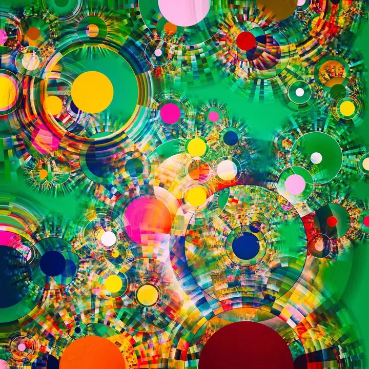
生成艺术Generative Art由艺术家设计规则、系统或算法，让作品在确定结构与随机变化之间持续生成。 赛博朋克Cyberpunk以高科技低生活的矛盾想象巨型都市、企业权力、身体改造与地下抵抗。
赛博朋克Cyberpunk以高科技低生活的矛盾想象巨型都市、企业权力、身体改造与地下抵抗。
 蒸汽朋克Steampunk以维多利亚时代工业技术重写架空未来，将蒸汽机械、探险和手工工程结合。
蒸汽朋克Steampunk以维多利亚时代工业技术重写架空未来，将蒸汽机械、探险和手工工程结合。
 太阳朋克Solarpunk想象生态修复、分布式技术和社区协作共存的可实现未来，对抗反乌托邦惯性。
太阳朋克Solarpunk想象生态修复、分布式技术和社区协作共存的可实现未来，对抗反乌托邦惯性。
 复古未来主义Retrofuturism从过去的科技想象回望未来，以乐观机器、太空旅行和年代错位制造魅力。
复古未来主义Retrofuturism从过去的科技想象回望未来，以乐观机器、太空旅行和年代错位制造魅力。
 合成波Synthwave重构八十年代电子音乐、街机、录像带与复古未来想象，营造夜行速度感。
合成波Synthwave重构八十年代电子音乐、街机、录像带与复古未来想象，营造夜行速度感。
 蒸汽波Vaporwave挪用八九十年代消费图像、早期电脑和古典雕塑，以怀旧错位评论数字资本主义。
蒸汽波Vaporwave挪用八九十年代消费图像、早期电脑和古典雕塑，以怀旧错位评论数字资本主义。
 Y2K 未来复古Y2K Futurism以千禧年前后的技术乐观、液态金属和早期数字界面想象未来。
Y2K 未来复古Y2K Futurism以千禧年前后的技术乐观、液态金属和早期数字界面想象未来。
 Frutiger AeroFrutiger Aero以自然、科技和乐观消费想象结合的界面审美，代表宽带互联网早期的亲和未来。
Frutiger AeroFrutiger Aero以自然、科技和乐观消费想象结合的界面审美，代表宽带互联网早期的亲和未来。
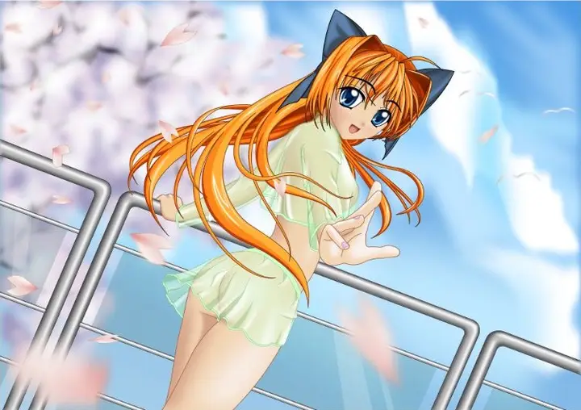
日系动画Japanese Anime Aesthetic以清晰角色设计、分镜语言和有限动画传统形成覆盖多题材的视觉体系。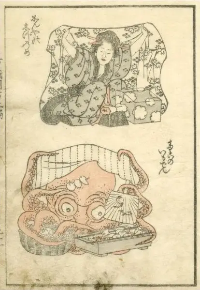
漫画视觉Manga Aesthetic以分格、速度线、网点和表情符号组织连续叙事与强烈情绪。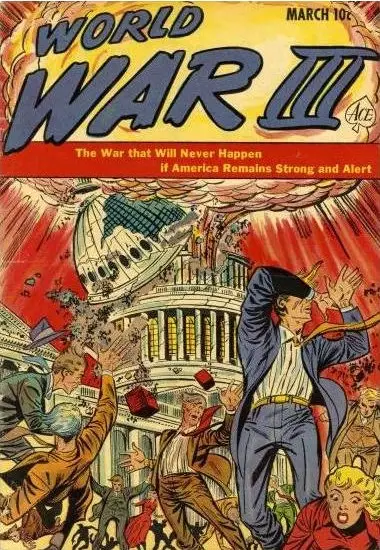
美式漫画American Comic-book Art以英雄叙事、动态分格、粗重墨线和工业印刷色建立高冲击漫画语言。 哥特亚文化视觉Gothic Subculture Aesthetic从后朋克音乐、维多利亚意象与暗色浪漫中形成冷峻、戏剧化的身份视觉。
哥特亚文化视觉Gothic Subculture Aesthetic从后朋克音乐、维多利亚意象与暗色浪漫中形成冷峻、戏剧化的身份视觉。
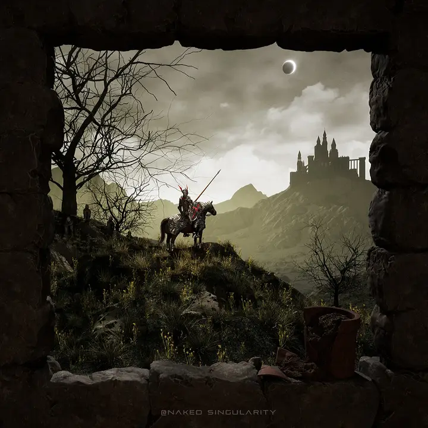
暗黑奇幻Dark Fantasy将奇幻世界与恐怖、衰败和道德不确定性结合，形成阴郁宏大的叙事视觉。 黑色电影Film Noir以犯罪都市、道德暧昧和表现主义光影构成紧张而宿命的电影视觉。
黑色电影Film Noir以犯罪都市、道德暧昧和表现主义光影构成紧张而宿命的电影视觉。
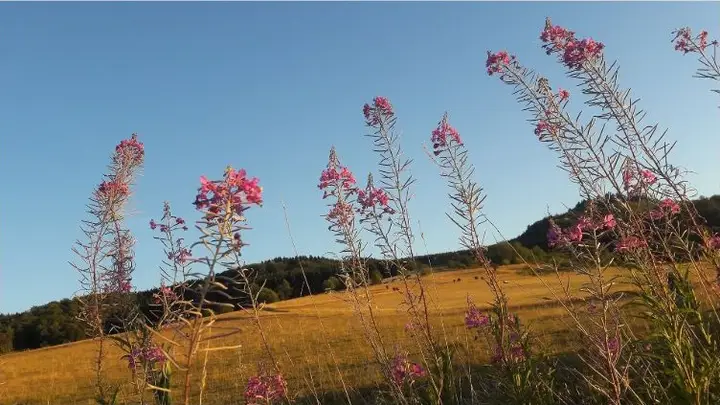
田园核Cottagecore以乡村手作、花园和缓慢生活回应数字压力，营造柔软理想化的日常。 暗黑学院Dark Academia将古典教育、旧图书馆和秋冬服饰组织成阴郁浪漫的知识生活想象。 梦核Dreamcore用熟悉场景的错位、柔焦和低清图像模拟梦境中亲切又不稳定的体验。
梦核Dreamcore用熟悉场景的错位、柔焦和低清图像模拟梦境中亲切又不稳定的体验。
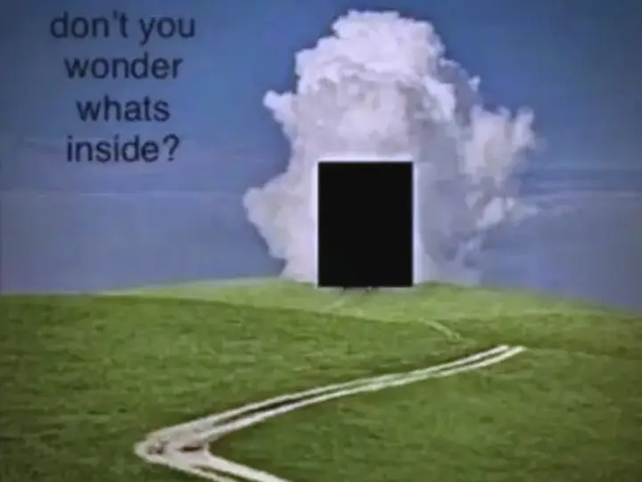
怪核Weirdcore以低清拼贴、异常文本和不协调物体制造难以解释的网络陌生感。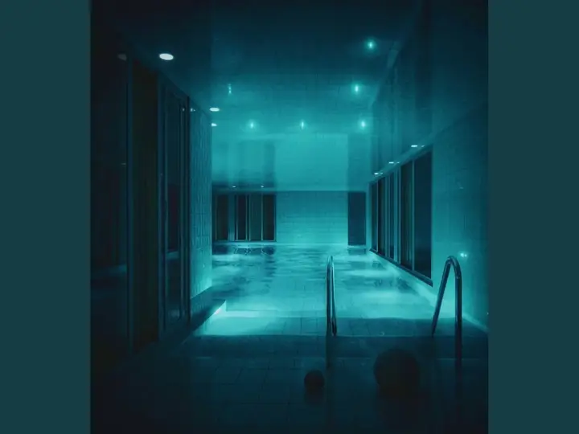
阈限空间Liminal Space Aesthetic聚焦本应短暂停留却空无一人的过渡空间，触发熟悉、孤独与不安并存的感受。 极繁主义Maximalism以受控的高密度、多层装饰和浓郁材质制造丰盛而有层级的视觉体验。
极繁主义Maximalism以受控的高密度、多层装饰和浓郁材质制造丰盛而有层级的视觉体验。
 结构主义Structuralism把网格、模块、节点和关系显性化，让视觉结构本身成为内容。
结构主义Structuralism把网格、模块、节点和关系显性化，让视觉结构本身成为内容。
 新未来主义Neo-Futurism以连续壳体、参数化曲面和轻质复合材料塑造流动的未来感。
新未来主义Neo-Futurism以连续壳体、参数化曲面和轻质复合材料塑造流动的未来感。
 生物形态风格Biomorphic Style从细胞、薄膜和生长结构提炼柔性曲面，而不直接复制具体生物。
生物形态风格Biomorphic Style从细胞、薄膜和生长结构提炼柔性曲面，而不直接复制具体生物。
 新波普艺术Neo-Pop Art以商品图标、漫画轮廓和电光鲜色重新组织大众消费视觉。
新波普艺术Neo-Pop Art以商品图标、漫画轮廓和电光鲜色重新组织大众消费视觉。
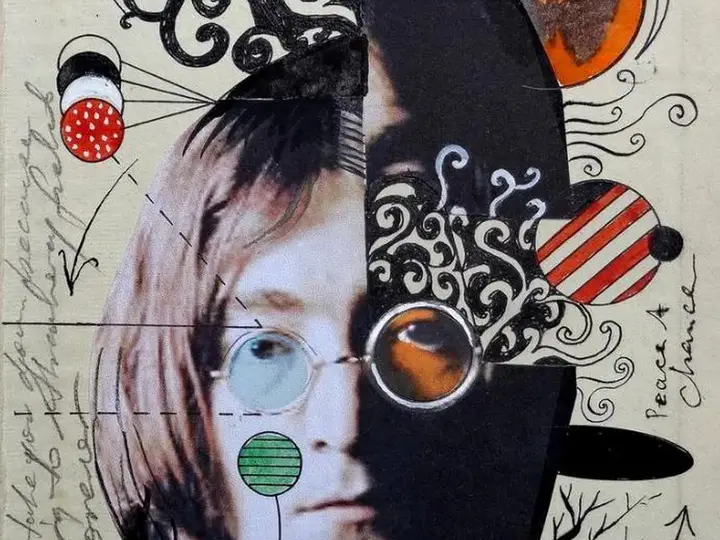
拼贴艺术Collage Art通过剪切、重叠、尺度断裂与可见接缝重组既有图像。 稚拙绘画Naive Art以直接轮廓、平面叙事和非学院派比例保留坦率的手绘感。
稚拙绘画Naive Art以直接轮廓、平面叙事和非学院派比例保留坦率的手绘感。
 原子朋克美学Atompunk Aesthetic把原子时代的乐观科技想象转化为流线、轨道与珐琅铬面。
原子朋克美学Atompunk Aesthetic把原子时代的乐观科技想象转化为流线、轨道与珐琅铬面。
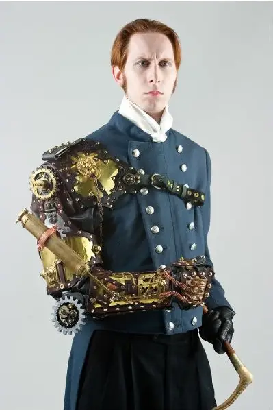
废土朋克美学Wasteland Punk Aesthetic以资源匮乏下的拼装、磨损与临时修复表现严酷的生存逻辑。 柴油朋克美学Dieselpunk Aesthetic用重型工业、铆接流线和油烟质感构造机械化的复古未来。
柴油朋克美学Dieselpunk Aesthetic用重型工业、铆接流线和油烟质感构造机械化的复古未来。
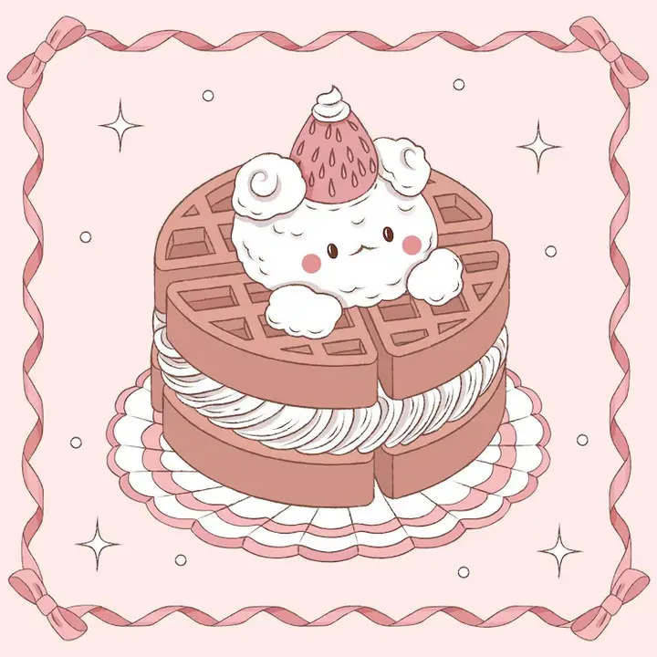
童核美学Kidcore Aesthetic以玩具模块、蜡笔贴纸和高饱和原色唤起童年媒介记忆。